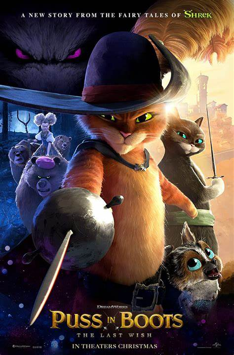
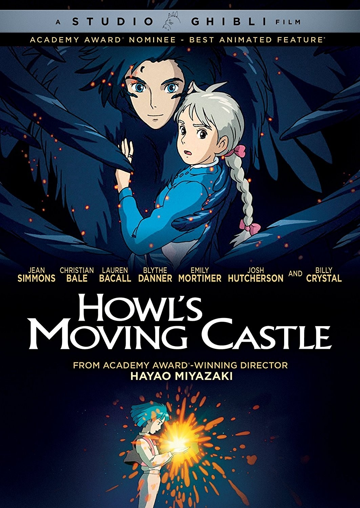

I should watch more movies XD
Similar to books , movies are a medium I've struggle to access for a while.
Internet and availability limitations make it hard to watch a full movie from here :(
Of course that doesn't stop me when I really want to watch something, but it takes a toll, creating a huge backlog of movies I wanna watch
-
Parasite
-
Puss & Boots: The Last Wish

-
A Silent Voice / Koe no katachi

To name a few
From live action to animation. Of course there are many movies I've watched in the past especially as a kid and teen
Some of my favorites:
-
Your Name / Kimi no nawa
-
Howl's Moving Castle

- The original Spiderman Trilogy
- Christopher Nolan's Batman Trilogy
- Jurassic Park
I really wish it wasn't so hard to access anything in here, but I know one day I'll be able to clear my backlog and I'm looking forward to it :)